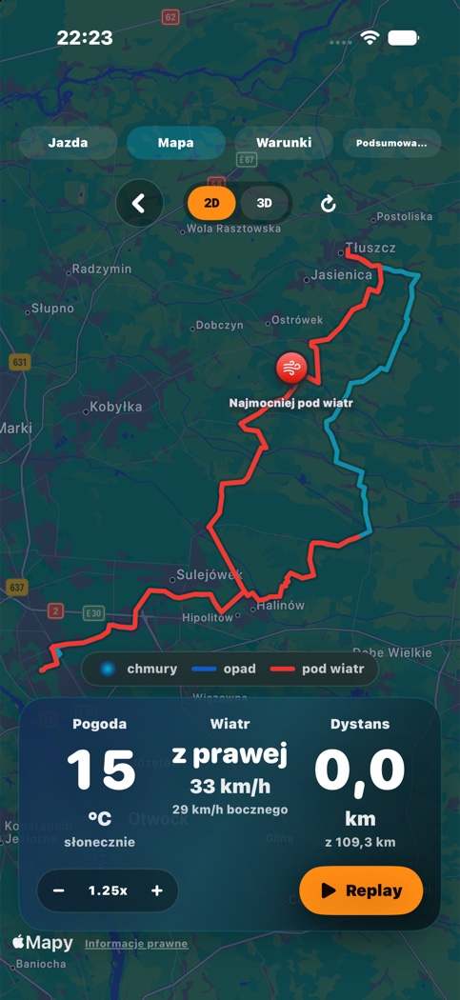
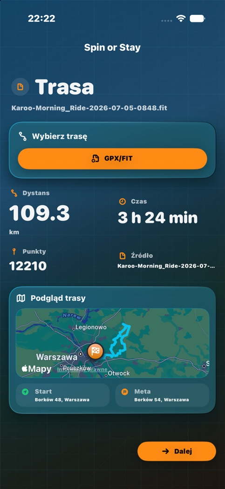
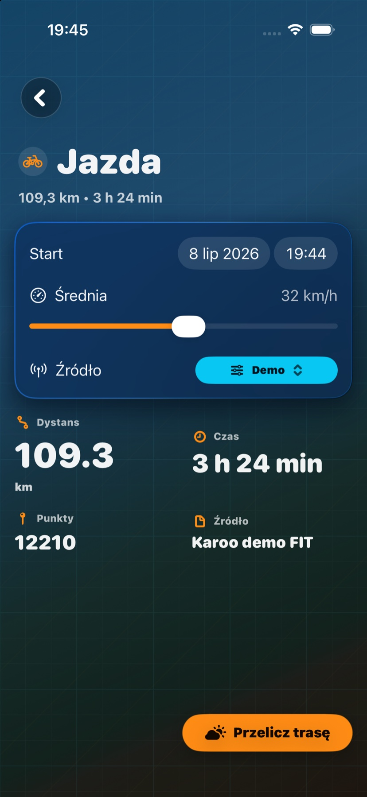
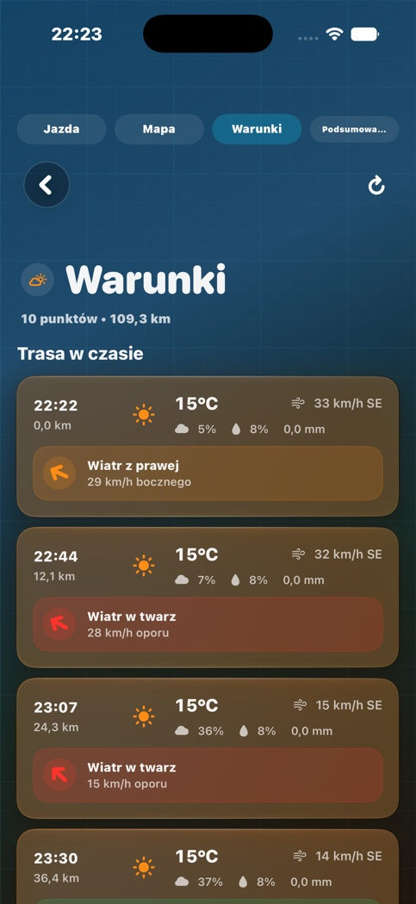
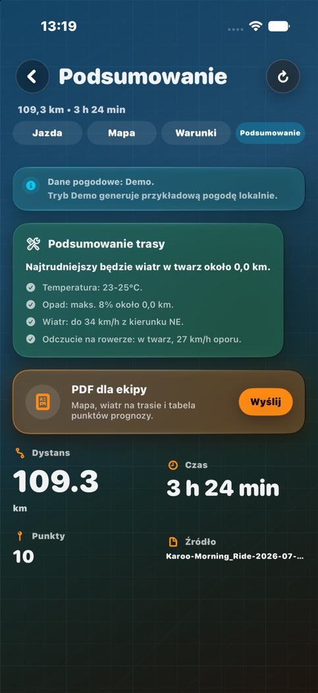

Import trasy
GPX/FIT z pliku, z szybkim podglądem dystansu, punktów i przebiegu trasy.
Pogoda dla kolarza na iPhone
Planuj przejazd z prognozą liczoną po trasie, czasie dotarcia do kolejnych punktów i realnym wpływie wiatru na jazdę.
O aplikacji
Spin or Stay bierze trasę rowerową, dzieli ją na punkty prognozy i sprawdza warunki w czasie, w którym prawdopodobnie tam dojedziesz. Dzięki temu widzisz nie tylko temperaturę, ale też odczuwalny wiatr, opad, zachmurzenie i fragmenty, które mogą zmienić plan.
GPX/FIT z pliku, z szybkim podglądem dystansu, punktów i przebiegu trasy.
Prognoza jest liczona według prędkości i czasu przejazdu.
Aplikacja rozróżnia wiatr w twarz, z tyłu i boczny.
Mapa maluje miejsca i odcinki, które mogą zmienić decyzję o jeździe.
Przejazd można odtworzyć punkt po punkcie, z warunkami w tle.
PDF z mapą, wiatrem, tabelą prognozy i krótkim werdyktem.
Jak działa
Aplikacja prowadzi przez krótki, techniczny flow: wybór trasy, ustawienie startu i tempa, przeliczenie pogody, a potem dashboard z mapą, warunkami i podsumowaniem.
Podgląd mapy, dystans, czas i liczba punktów dają szybki sanity check.
Start, średnia prędkość i źródło pogody dopasowują prognozę do planu.
Mapa, timeline warunków, replay i summary mówią, czy jechać teraz.
Mapa i replay
Dashboard pokazuje przebieg trasy, kolorowane punkty krytyczne, najmocniejszy wiatr i aktualny punkt replay. To ma być szybka odpowiedź na pytanie: kręcić czy przełożyć?

Screeny z aplikacji
Strona pokazuje zrzuty z symulatora iPhone 17: trasę demo, ustawienia przejazdu, mapę z punktami krytycznymi, timeline warunków i podsumowanie PDF.




Status
Spin or Stay jest natywną aplikacją SwiftUI. Kod aplikacji i repo developerskie są prywatne, a ta strona jest publicznym opisem produktu i materiałem do pokazania funkcji.
GPX/FIT, demo weather, Open-Meteo, met.no, mapa z punktami krytycznymi, replay i raport PDF.
Konfiguracja produkcyjna WeatherKit, dystrybucja testowa i finalny opis prywatności.